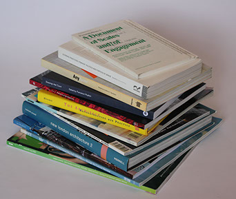

- The Architect: Reconstructing Her Practice, ed. Francesca Hughes, MIT Press, Cambridge, 1996.
- 'Faking it: Pregnant Pauses and Other Constructions of Delay', Francesca Hughes, Anyhow, MIT Press, 1998.
- 'The un-Private House', review of show by same title at MOMA, Francesca Hughes, Artforum International, XXXVIII, No. 3, Nov 1999.
- ‘An Anatomy of Separation’, Francesca Hughes, AA files, Summer 2005.
- ‘Extreme Adaptations’, A Document of Scales and Engagement, Francesca Hughes, Architectural Association Press, London, 2006
- ‘Stabat Mater’ in Altering Practices: Feminist Politics and Poetics of Sapce, Francesca Hughes, ed. Petrescu, Routledge, London, July 2006.
- ‘Head banging: Engineered Neutrality + the Parametric Ceiling’, Francesca Hughes, Patterns of Architecture, AD, Vol 79, No 6, Wiley, London, 2009.
- ‘Inculpable Machines: the Guillotine, the Computer and the Engineering of Neutrality’, Francesca Hughes & Gergely Kovács, Space, August 2012.
- Drawings that Count, ed. Francesca Hughes, with essays by Noam Andrews, Mary Beard and David Edgerton, AA Publications, 2013.
- The Architecture of Error: Matter, Measure and the Misadventures of Precision, Francesca Hughes, MIT Press 2014.
